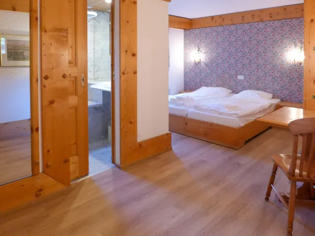
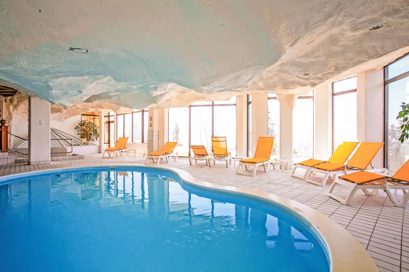

تمتلئ فنادق فيلار بسرعة في عطلات نهاية الأسبوع المدرسية، وتضيق الغرفة الواحدة سريعًا مع ابن مراهق وأصدقائه. Le Bristol A46 شقة بغرفة نوم واحدة تتسع لـ 4 أشخاص، مع حمّامين وشرفتين ومطبخ صغير ومسبح داخلي مُدفأ في المبنى. إنها مكان هادئ تأخذ فيه العائلة راحتها، ومكتب Interhome المحلي في فيلار على الطريق نفسه إن احتجت إلى أي شيء.

لمحة سريعة
- تتسع لـ 4: غرفة نوم بسريرين مفردين وأريكة سرير مزدوجة
- حمّامان، وشرفتان
- مسبح داخلي مُدفأ، ومصعد، وغرفة للتزلج
- واي فاي، ومطبخ صغير مع طقمَي فوندو وراكليت
- 500 متر إلى قرية فيلار ومحطتها
الموقع مقارنةً بـ Beau Soleil
تقع Beau Soleil (Collège Alpin International Beau Soleil) على Route du Village في وسط Villars-sur-Ollon. ويقع Le Bristol في Avenue Centrale 164، على بُعد نحو 500 متر من وسط القرية، لذا تبعد المدرسة نحو 10 دقائق سيرًا.
يمكنك ترك السيارة مركونة والمشي إلى المدرسة ومتاجر القرية ومطاعمها ومحطة فيلار.
مثالية لزيارات المدرسة
يوم الوصول
ساعد طفلك على الاستقرار، ثم عُد سيرًا إلى شقة فيها مساحة لتفريغ الحقائب ومطبخ لعشاء بسيط.
عطلات نهاية الأسبوع & منتصف الفصل
أريكة سرير لأخ أو صديق، وحمّامان، ومسبح مُدفأ في المبنى.
العروض والمباريات & فعاليات أولياء الأمور
بضع ليالٍ قرب المدرسة دون تناول كل الوجبات في الخارج.
حفل التخرج
احتفلوا بفوندو على الشرفة، والوادي تحتكم.
الوصول إلى فيلار
- من مطار جنيف بالقطار: تسير قطارات مباشرة على ضفاف بحيرة جنيف إلى Bex، ثم يصعد القطار الجبلي الصغير إلى فيلار. خصّص نحو 2 ساعة.
- بالسيارة: نحو ساعة و30 دقيقة من جنيف، مع الخروج من الطريق السريع عند Aigle أو Bex. في الشتاء، تحقق مما إذا كنت تحتاج إلى سلاسل الثلج.
- من زيورخ: خصّص نحو 3 ساعات بالقطار.



أسئلة تطرحها العائلات
كم تبعد الشقة عن Beau Soleil؟
تقع Beau Soleil على Route du Village في وسط فيلار. وتبعد الشقة نحو 500 متر عن وسط القرية، لذا يستغرق المشي نحو 10 دقائق.
كم شخصًا تتسع الشقة؟
حتى 4 أشخاص: سريران مفردان في غرفة النوم وأريكة سرير مزدوجة في غرفة المعيشة. وفيها حمّامان.
هل نحتاج إلى سيارة؟
لا. المدرسة والمتاجر ومحطة فيلار كلها على مسافة قريبة سيرًا، وفي الشتاء تتوقف حافلة التزلج المجانية على بُعد 20 مترًا من المبنى.
متى ينبغي أن نحجز؟
بمجرد صدور تقويم المدرسة. فبداية الفصل ونهايته وعطلات منتصف الفصل والتخرج تملأ فيلار بسرعة، خاصةً في موسم التزلج في فبراير.
من يتولى الحجز؟
تتولى Interhome، شركة تأجير بيوت العطلات، الحجز والدفع. ويهتم مكتبها المحلي في فيلار، على Avenue Centrale، بالمفاتيح والتنظيف وأي مساعدة تحتاج إليها خلال إقامتك.
اطّلع على ما يمكن فعله في الشتاء وما يمكن فعله في الصيف مع طفلك في عطلة نهاية الأسبوع.
Le Bristol A46 شقة مملوكة ملكية خاصة، تؤجَّر عبر Interhome. لا صلة لنا بـ Beau Soleil. المسافات وأوقات السفر تقريبية، لذا تحقق من جداول المواعيد وتقويم المدرسة قبل السفر.